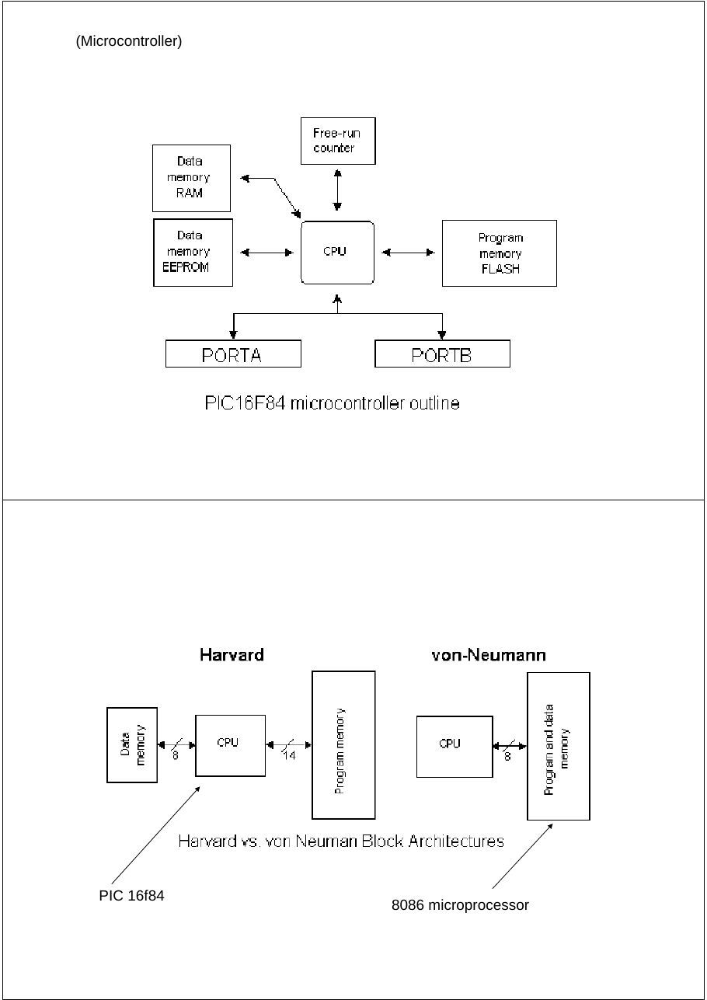
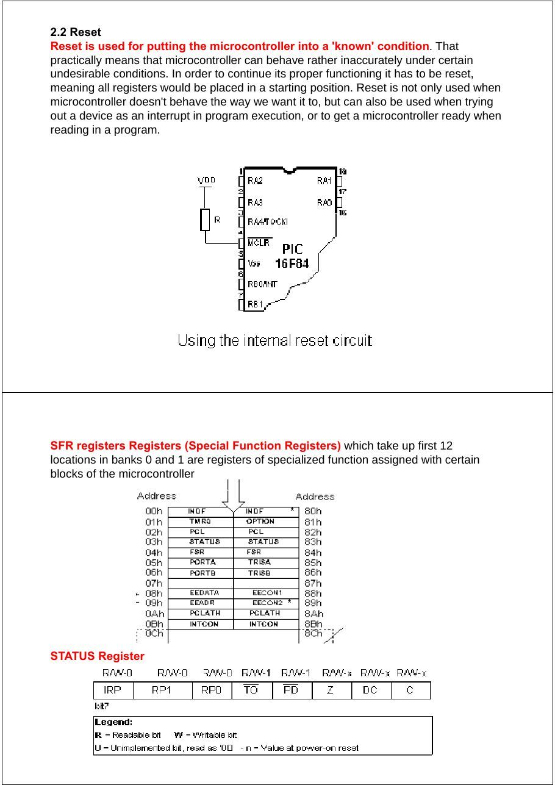
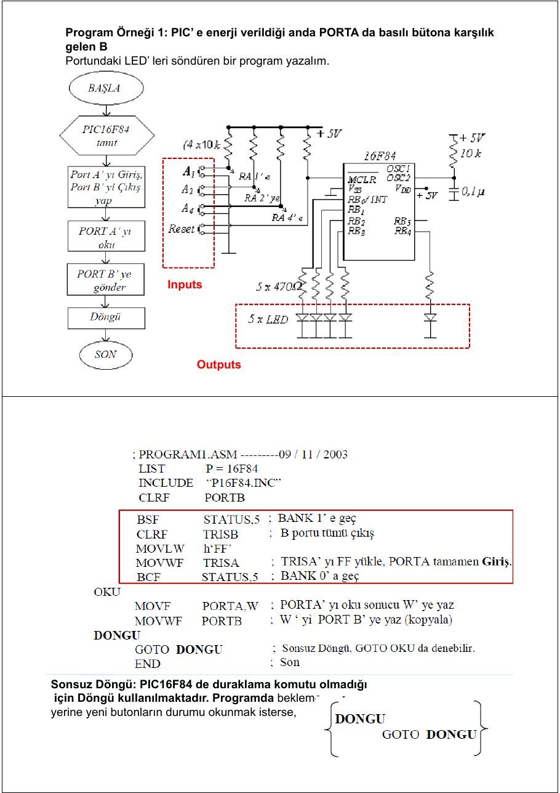
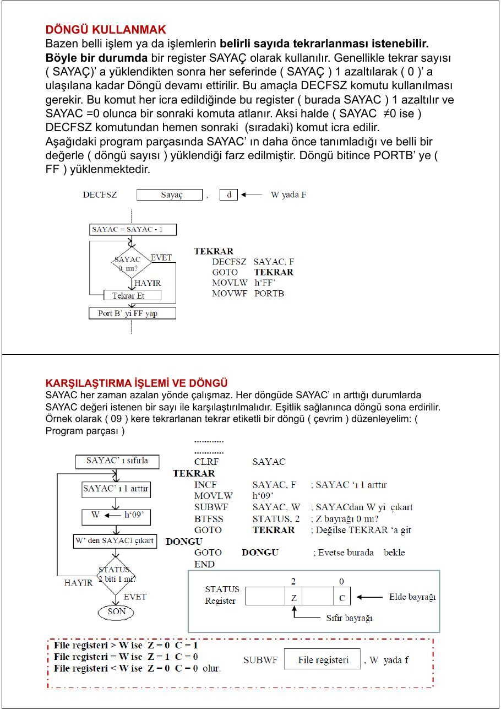
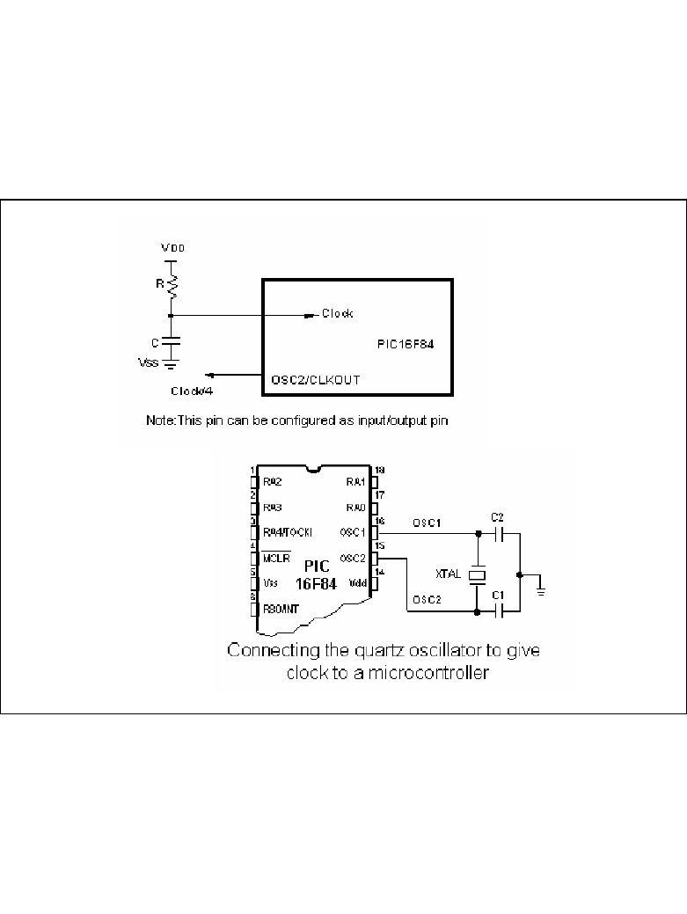
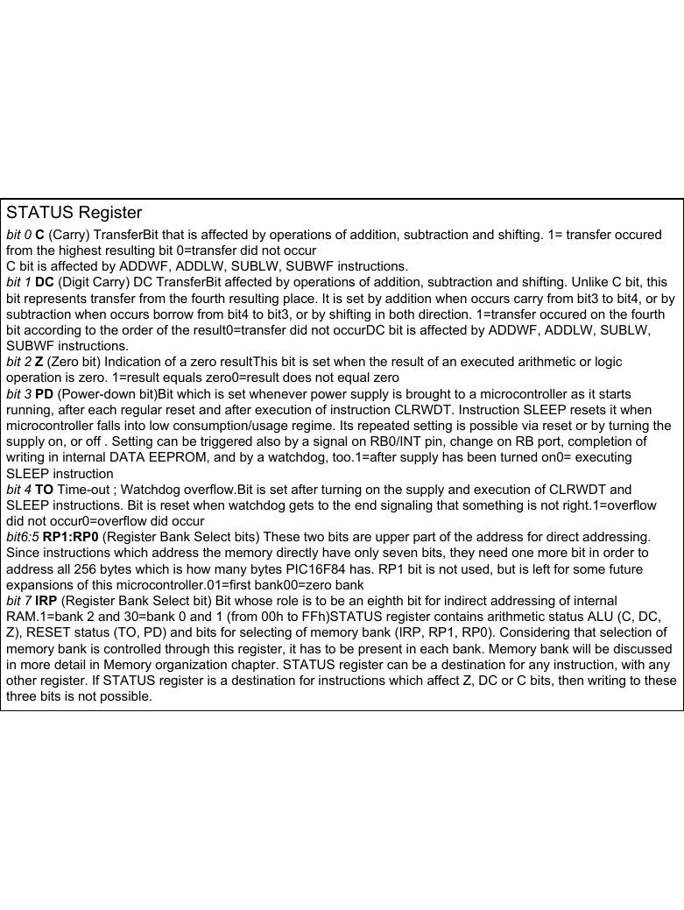
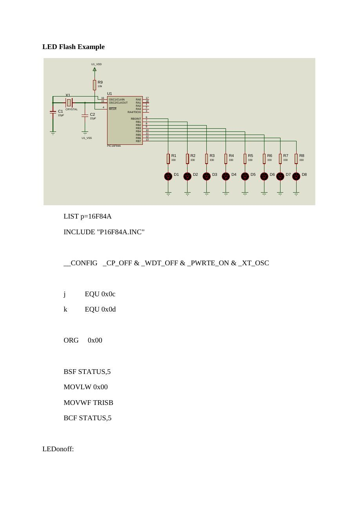
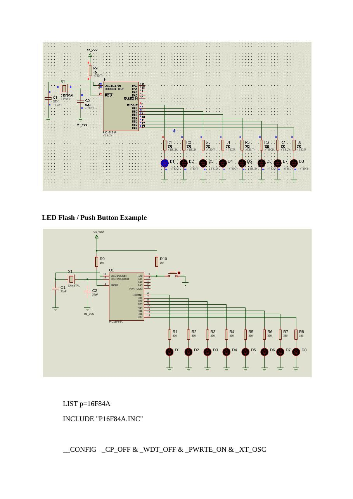
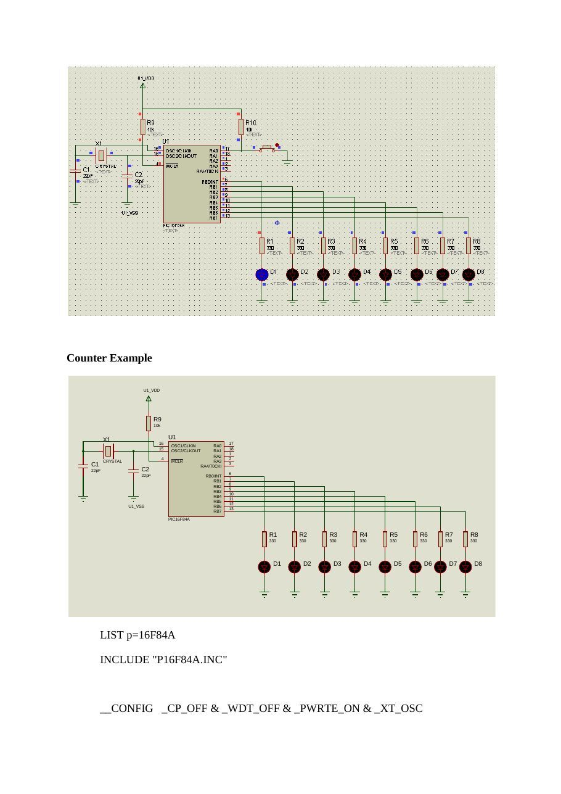

· EEM332
EEM332 Mikroişlemciler: PIC16F84 Notları ve Uygulamaları (Başkent Üniversitesi ve Ozan Akı)
EEM332 – Mikroişlemciler · 15.05.2006 · 18.10.2026
Bu yazı, Başkent Üniversitesi EEM332 Mikroişlemciler ders arşivindeki ilgili notları ve uygulamaları bir araya getiriyor (2006–2015). PIC16F84 portları, bellek bankaları, bit testleri, gecikme döngüleri ve LED uygulamaları. Kaynak: Başkent Üniversitesi ders sunumları ve Trakya Üniversitesi İpsala MYO, Ozan Akı, PIC Assembly komutları (9 Ocak 2009). Belgelerin PDF arşiv kopyaları ve varsa kaynak kodları yazının sonunda ZIP olarak indirilebilir.
Bu içerik üçüncü taraf bir kaynağa aittir; arşiv ve nostalji amacıyla kaynak belirtilerek paylaşılmıştır. Hak sahibinin talebi hâlinde kaldırılır.
PIC
Microchip PIC Mikrodenetleyicileri EEM 332 Mikroişlemciler
PIC Nedir?
- PIC:Peripheral Interface Controller
- Çevresel Arayüz Birimi Denetleyicisi
- Amacı: Çok fonksiyonlu logic uygulamalarının
hızlı ve ucuz bir mikroişlemci ile yazılım yoluyla karşılanmasıdır
- İlk PIC: PIC16C54 (1994)
- En Popüler PIC: PIC16F(C)84
Neden PIC?
Neden PIC?
- Lojik uygulamalarının hızlı olması
- Fiyatının oldukça ucuz olması
- 8 bitlik mikrodenetleyici olması, bellek ve veri için ayrı
yerleşik bus’ ların kullanılması
- Veri ve belleğe hızlı olarak erişimin sağlanması
- PIC’e göre diğer mikrodenetleyicilerde veri ve programı
taşıyan bir tek bus bulunması, dolayısıyla PIC’ in bu özelliği ile diğer mikrodenetleyicilerden iki kat daha hızlı olması
- Yüksek frekanslarda çalışabilme özelliği
- Standby durumunda çok düşük akım çekmesi
- Azaltılmış kod yapısı (RISC yapısı) ile işlemleri daha
hızlı gerçekleştirebilmesi
Neden PIC?
- Herhangi bir ek bellek veya giriş/çıkış
elemanı gerektirmeden sadece 2 kondansatör, bir kristal ve bir direnç ile çalışabilmeleri
- Program belleğinin Eeprom olması
- Seri olarak dört adet kabloyla bulunduğu
devreden sökülmeden programlanabilmesi
RISC Programlama
- RISC: reduced instruction set computer
- Avantajları:
Komutlar daha hızlı çalıştırılır RISC tabanlı çipler daha az transistor’e ihtiyac duyar. Tasarlanması kolay ve maliyeti ucuzdur.
Komutlar - I
- Assembly dili ile PIC’e istediklerinizi yaptırmak
için 35 komut öğrenmek yeterlidir
- Yazılım Pascal, C/C++, Basic, Assembler ve
hatta Binary olarak yazılabilir
- Her komut 14 bit uzunluğundadır ve istisnai bir
kaç komut dışında (CALL, GOTO ve bit test eden BTFSS, INCFSZ gibi) her komut tek çevrimde çalışır
Komutlar - II
Komutlar - III
Accumulator
- 8086’daki kullanılan yazmaçlar
(AX,BX,CX,DX) yerine PIC yalnızca W Yazmacı’nı kullanır
- 8086’dakinin aksine, bir değeri bir
değişkene atmak istediğimizde mutlaka W yazmacını kullanmak zorundayız
W Yazmacı (W Register)
- Bu register sanal bir saklayıcıdır. İçeriğine direk ulaşmak
mümkün değildir. Ancak bütün yükleme işlemleri bu register yardımıyla yapılmaktadır.
- Bir değişkene, bir registere yada bir porta bilgi göndermek için,
önce bu bilgiyi W registerine, daha sonra W registerini ilgili porta ya da değişkene yüklemek yolunu kullanmak şarttır.
- Örnek: Bir değişkene bilgi yükleme:
MOVLW D'15' ;W=15
MOVWF SAYAC ;sayac=15W Yazmacı (W Register)
- Örnek: Bir değişken içeriğini başka bir değişkene yükleme.
MOVF SAYAC1,W ;W=SAYAC1
MOVWF SAYAC2 ;SAYAC1=SAYAC2!!! Bir değişken ya da register içeriğini W'e yüklemek için MOVF (ya da MOVFW) komutunu kullanmak şarttır. MOWLW komutunu kullanarak W'e sadece sabit bir değer yüklenebilir.
Giriş Çıkış Bacakları
Clock Uçları ve Bağlantıları- PIC’in clock sinyal girişi olarak kullanılan 2 ucu vardır.
- Bu uçlara farklı tipte osilatörlerden elde edilen sinyaller
uygulanabilir. RC-Direnç/Kondansatör XT-Kristal veya seramik resonatör (XTAL) HS-Yüksek hızlı kristal veya resonatör (High Speed) LP-Düşük frekanslı kristal (Low Power)
- PIC’e bağlanan clock’un tipi programlama sırasında
konfigurasyon bitlerine yazılır.
Clock Uçları ve BağlantılarıClock Uçları ve BağlantılarıReset Devresi
Bank (16F84)
- 8086’daki
Segment’ler yerine PIC’te Bank’lar ve bankların içinde bulunan özel ve genel amaçlı Register’lar kullanılır.
Bank (16F628)
Bank (16F877)
PIC Nasıl Programlanır ?
- PIC Programlamak İçin Gerekenler
IBM uyumlu bilgisayar Metin editörü Assembler programı (MPLAB) PIC programlayıcı donanım ve yazılım
PIC
Assembler programı (MPLAB)
- Ücretsiz bir yazılım
- Simulasyon yapılabilir
- www.microchip.com ve
www.baskent.edu.tr/~eemekdas/dersler/ee m332l.htm adreslerinden edinilebilir.
Status Yazmacı-1
- Status Yazmacı: Bank’lar arasındaki geçişi
sağlar.
Status Yazmacı-2
- BSF STATUS,RP0 ;Bit Set f
;(Status’da RP0)- BSF STATUS,5 ;Bit Set f
;(Status’da Bit 5)Program Bölümleri
LIST P=16F877 Başlık Bloğu
INCLUDE P16F877.INCAdres ve Değişken #DEFINE DEGISKEN_1 d’100’ Atama Bloğu #DEFINE DEGISKEN_2 b’10010110’ ;=d’150’=0x96
DEGIS_3 EQU 0x20 ;HAFIZADA SEÇİLEN BİR YERE
DEGIS_4 EQU 0x21 ;ATANAN DEĞİŞKENORG 0 ;PROGRAMI 0X00’DAN BAŞLATPort Durumu Belirleme Bloğu Açıklama Bloğu
BASLA
BSF STATUS,RP0 ;BANK1’E GEÇİŞ
MOVLW b'00000111' ;İSTENEN I/O KONFİGURASYONU SEÇİLİR
MOVWF TRISA ;TRISA REGISTER’INA ATANIR
CLRF TRISB ;TRISB ÇIKIŞ MODUNA ATANIR (BÖYLECE
;PORTB’YE ATANACAK BİLGİLER ÇIKIŞ OLARAK
;GÖRÜLÜR)
BCF STATUS,RP0 ;BANK0’A GEÇİŞMOVLW b'00001010' ;B PORTUNA 1010 BILGISI GONDER
MOVWF PORTB ;
; CLRF PORTB DİYEREK ÇIKIŞI TAMAMEN SIFIRLAYABİLİRİZProgram Bloğu
DONGU
GOTO DONGU ;SONSUZ LOOPEtiket Bloğu END
Sonlandırma Bloğu
Büyük ve Küçük Harf Kullanımı
- PIC Komutlarının büyük veya küçük harfle
yazılması önemli değildir
MoVlW=movlw=MOVLW- Ancak etiketler harf büyüklüğüne duyarlıdır
Dongu≠DONGU
Başlık Bloğu
- LIST P=16F877
Kullanılacak PIC’i tanımlar
- INCLUDE P16F877.INC
Kullanılan PIC’teki Yazmaç tanımlamaları bu dosyada saklanır. Böylece ‘Default’ olan yazmaçların teker teker tanımlanması gerekmez.
Kullanılan Sayı/Karakter Tipleri
- Hexadecimal
STATUS EQU 0x033 Adres ve Değişken 03 Atama Bloğu 03h h’03’
MOVLW 0x03h’03’ Program Bloğu 03h
- Binary
MOVLW b’00010110’- Decimal
MOVLW d’15’- ASCII Character
RETLW ‘A’CONFIG Satırı Koşul Yazılacak Tanım Kodu
- Konfigurasyon bit’leri, PIC’e
gerilim uygulandığı anda Kod koruma var _CP_ON
PIC’in uyması gereken Kod koruma yok _CP_OFF
koşulları belirler. Power-on-reset var _PWRTE_ON
Power-on-reset yok _PWRTE_OFF
Watchdog timer devrede _WDT_ON
Watchdog timer devrede yok _WDT_OFF
Low Power Osilatör _LP_OSC
Kristal Osilatör _XT_OSC
High Speed Osilatör _HS_OSC
RC Osilatör _RC_OSC
Örnek Program - 1
LIST P=16F877
INCLUDE P16F877.INCORG 0 ;PROGRAMI 0X00’DAN BAŞLATBSF STATUS,RP0 ;BANK1’E GEÇİŞ
CLRF TRISD ;TRISD ÇIKIŞ MODUNA ATANIR
BCF STATUS,RP0 ;BANK0’A GEÇİŞMOVLW b'01100110' ;D PORTUNA 01100110 BILGISI GONDER
MOVWF PORTDDONGU
GOTO DONGU ;SONSUZ LOOP
ENDÖrnek Program - 2
LIST P=16F877 CALL BEK
INCLUDE P16F877.INC MOVLW DSAYI
__CONFIG _CP_OFF & _WDT_OFF & _PWRTE_ON & MOVWF PORTD_XT_OSC CALL BEK
;------------------------------------------- MOVLW 0x05DEFINE DSAYI 0xFF MOVWF PORTE
CNTKH EQU 0x25 CALL BEK
CNTKL EQU 0x26 CALL BEK
CNTKM EQU 0x27 GOTO DONGU
;------------------------------------------- ;------------------------------------------
ORG 0x00 BEKBASLA MOVLW 0X05
CLRF PORTA MOVWF CNTKM
CLRF PORTB TEKM
CLRF PORTC MOVLW 0XF0
CLRF PORTD MOVWF CNTKH
CLRF PORTE TEK1
MOVLW 0XFF
BSF STATUS,RP0 MOVWF CNTKL
CLRF TRISB TEK2
CLRF TRISC DECFSZ CNTKL,F
CLRF TRISD GOTO TEK2
CLRF TRISE DECFSZ CNTKH,F
BCF STATUS,RP0 GOTO TEK1
;------------------------------------------- DECFSZ CNTKM,F
CALL BEK GOTO TEKM
MOVLW b'01010101' RETURN
MOVWF PORTB
CALL BEK DONGU
MOVLW b'11001100' GOTO BASLA
MOVWF PORTC ENDpic_Sunum1_2013 [Uyumluluk Modu]
(Microcontroller)
PIC 16f84 8086 microprocessor
Pin no.1 RA2 Second pin on port A. Has no additional function Pin no.2 RA3 Third pin on port A. Has no additional function. Pin no.3 RA4 Fourth pin on port A. TOCK1 which functions as a timer is also found on this pin Pin no.4 MCLR Reset input and Vpp programming voltage of a microcontroller Pin no.5 Vss Ground of power supply. Pin no.6 RB0 Zero pin on port B. Interrupt input is an additional function. Pin no.7 RB1 First pin on port B. No additional function. Pin no.8 RB2 Second pin on port B. No additional function. Pin no.9 RB3 Third pin on port B. No additional function. Pin no.10 RB4 Fourth pin on port B. No additional function. Pin no.11 RB5 Fifth pin on port B. No additional function. Pin no.12 RB6 Sixth pin on port B. 'Clock' line in program mode. Pin no.13 RB7 Seventh pin on port B. 'Data' line in program mode. Pin no.14 Vdd Positive power supply pole. Pin no.15 OSC2 Pin assigned for connecting with an oscillator Pin no.16 OSC1 Pin assigned for connecting with an oscillator Pin no.17 RA2 Second pin on port A. No additional function Pin no.18 RA1 First pin on port A. No additional function.
Memory organization PIC16F84 has two separate memory blocks, one for data and the other for program. EEPROM memory and GPR registers in RAM memory make up a data block, and FLASH memory makes up a program block.
Program memory
Program memory has been realized in FLASH technology which makes it possible to program a microcontroller many times before it's installed into a device, and even after its installment if eventual changes in program or process parameters should occur. The size of program memory is 1024 locations with 14 bits width where locations zero and four are reserved for reset and interrupt vector.
Data memory
Data memory consists of EEPROM and RAM memories. EEPROM memory consists of 64 eight bit locations whose contents is not lost during loosing of power supply. EEPROM is not directly addressible, but is accessed indirectly through EEADR and EEDATA registers. As EEPROM memory usually serves for storing important parameters (for example, of a given temperature in temperature regulators) , there is a strict procedure for writing in EEPROM which must be followed in order to avoid accidental writing. RAM memory for data occupies space on a memory map from location 0x0C to 0x4F which comes to 68 locations. Locations of RAM memory are also called GPR registers which is an abbreviation for General Purpose Registers. GPR registers can be accessed regardless of which bank is selected at the moment.
Osilator: RC, Crystal,..
Simple Power supply
2.2 Reset Reset is used for putting the microcontroller into a 'known' condition. That practically means that microcontroller can behave rather inaccurately under certain undesirable conditions. In order to continue its proper functioning it has to be reset, meaning all registers would be placed in a starting position. Reset is not only used when microcontroller doesn't behave the way we want it to, but can also be used when trying
out a device as an interrupt in program execution, or to get a microcontroller ready whenreading in a program.
SFR registers Registers (Special Function Registers) which take up first 12 locations in banks 0 and 1 are registers of specialized function assigned with certain blocks of the microcontroller
STATUS Register
I/O selection (Bidirectional ports)
PORTB
: The example shows how pins 0, 1, 2, and 3 are declared for input, and pins 4, 5, 6, and 7 for output.
Example shows how pins 0, 1, 2, 3, and 4 are declared to be input,
PORTA
and pins 5, 6, and 7 to be output pins.STATUS Register bit 0 C (Carry) TransferBit that is affected by operations of addition, subtraction and shifting. 1= transfer occured from the highest resulting bit 0=transfer did not occur C bit is affected by ADDWF, ADDLW, SUBLW, SUBWF instructions. bit 1 DC (Digit Carry) DC TransferBit affected by operations of addition, subtraction and shifting. Unlike C bit, this bit represents transfer from the fourth resulting place. It is set by addition when occurs carry from bit3 to bit4, or by
subtraction when occurs borrow from bit4 to bit3, or by shifting in both direction. 1=transfer occured on the fourthbit according to the order of the result0=transfer did not occurDC bit is affected by ADDWF, ADDLW, SUBLW,
SUBWF instructions.bit 2 Z (Zero bit) Indication of a zero resultThis bit is set when the result of an executed arithmetic or logic operation is zero. 1=result equals zero0=result does not equal zero bit 3 PD (Power-down bit)Bit which is set whenever power supply is brought to a microcontroller as it starts running, after each regular reset and after execution of instruction CLRWDT. Instruction SLEEP resets it when microcontroller falls into low consumption/usage regime. Its repeated setting is possible via reset or by turning the supply on, or off . Setting can be triggered also by a signal on RB0/INT pin, change on RB port, completion of writing in internal DATA EEPROM, and by a watchdog, too.1=after supply has been turned on0= executing SLEEP instruction bit 4 TO Time-out ; Watchdog overflow.Bit is set after turning on the supply and execution of CLRWDT and SLEEP instructions. Bit is reset when watchdog gets to the end signaling that something is not right.1=overflow did not occur0=overflow did occur bit6:5 RP1:RP0 (Register Bank Select bits) These two bits are upper part of the address for direct addressing. Since instructions which address the memory directly have only seven bits, they need one more bit in order to
address all 256 bytes which is how many bytes PIC16F84 has. RP1 bit is not used, but is left for some futureexpansions of this microcontroller.01=first bank00=zero bank bit 7 IRP (Register Bank Select bit) Bit whose role is to be an eighth bit for indirect addressing of internal RAM.1=bank 2 and 30=bank 0 and 1 (from 00h to FFh)STATUS register contains arithmetic status ALU (C, DC, Z), RESET status (TO, PD) and bits for selecting of memory bank (IRP, RP1, RP0). Considering that selection of memory bank is controlled through this register, it has to be present in each bank. Memory bank will be discussed
in more detail in Memory organization chapter. STATUS register can be a destination for any instruction, with anyother register. If STATUS register is a destination for instructions which affect Z, DC or C bits, then writing to these three bits is not possible.
Creating time delays in 8088/8086 based system for a delay loop Or Timer
MOV CX,N
Again: LOOP againEvrey loop takes total of 17 clock pulse to be executed so the time delay is Nx17 example : system frequency is 4.7 MHZ (t=210 ns). For 100ms delay its needed N) 28000
Another way for delay generation is using of external hardware timers
Q Q Q
D D D
Asynchronous Counter
CLKSynchronous Counter
Q Q Q
D D D
CLK
BUFGPOPTION register (Timer)
bit 0:2 PS0, PS1, PS2 (Prescaler Rate Select bit) These three bits define prescaler rate select bit. What a prescaler is and how these bits can affect the work of a microcontroller will be explained in section on TMR0. bit 3 PSA (Prescaler Assignment bit)Bit which assigns prescaler between TMR0 and watchdog.1=prescaler is assigned to watchdog0=prescaler is assigned to a free-run timer TMR0 bit 4 T0SE (TMR0 Source Edge Select bit)If it is allowed to trigger TMR0 by impulses from the pin RA4/T0CKI, this bit determines whether this will be to the falling or rising edge of a signal.1=falling edge0=rising edge bit 5 TOCS (TMR0 Clock Source Select bit)This pin enables free-run timer to increment its state either from internal oscillator on every ¼ oscillator clock, or through external impulses on RA4/T0CKI pin.1=external impulses0=1/4 internal clock bit 6 INTEDG (Interrupt Edge Select bit)If interrupt is enabled possible this bit will determine the edge at which an interrupt will be activated on pin RB0/INT.1=rising edge0=falling edge bit 7 RBPU (PORTB Pull-up Enable bit) This bit turns on and off internal 'pull-up' resistors on port B.1= "pull-up" resistors turned off 0= "pull-up" resistors turned on
Timer
İnterrupt Register (INTCON Register )
Interrupt initialization
İnterrupt Register (INTCON Register )
bit 0 RBIF (RB Port Change Interrupt Flag bit) Bit which informs about changes on pins 4, 5, 6 and 7 of port B.1=at least one pin has changed its status0=no change occured on any of the pins bit 1 INTF (INT External Interrupt Flag bit) External interrupt occured.1=interrupt occured0=interrupt did not occurIf a rising or falling edge was detected on pin RB0/INT, (which is defined with bit INTEDG in OPTION register), bit INTF is set. Bit must be cleared in interrupt subprogram in order to detect the next interrupt. bit 2 T0IF (TMR0 Overflow Interrupt Flag bit) Overflow of counter TMR0.1= counter changed its status from FFh to 00h0=overflow did not occurBit must be cleared in program in order for an interrupt to be detected .bit 3 RBIE (RB port change Interrupt Enable bit) Enables interrupts to occur at the change of status of pins 4, 5, 6, and 7 of port B. 1= enables interrupts at the change of status0=interrupts disabled at the change of statusIf RBIE and RBIF were simultaneously set, an interrupt would occur. bit 4 INTE (INT External Interrupt Enable bit) Bit which enables external interrupt from pin RB0/INT.1=external interrupt enabled0=external interrupt disabledIf INTE and INTF were set simultaneously, an interrupt would occur .bit 5 T0IE (TMR0 Overflow Interrupt Enable bit) Bit which enables interrupts during counter TMR0 overflow.1=interrupt enabled0=interrupt disabledIf T0IE and T0IF were set simultaneously, interrupt would occur. Bit 6 EEIE (EEPROM Write Complete Interrupt Enable bit) Bit which enables an interrupt at the end of a writing routine to EEPROM1=interrupt enabled0=interrupt disabledIf EEIE and EEIF (which is
in EECON1 register) were set simultaneously , an interrupt would occur.Bit 7 GIE (Global Interrupt Enable bit) Bit which enables or disables all interrupts.1=all interrupts are enabled0=all interrupts are disabledPIC16F84 has four interrupt sources:1. Termination of writing data to EEPROM2. TMR0 interrupt caused by timer overflow3. Interrupt during alteration on RB4, RB5, RB6 and RB7 pins of port B.4. External interrupt from RB0/INT pin of microcontroller
Instructions
Example
Optocoupler on an input line (İzolation) The way it works is simple: when a signal arrives, the LED within the optocoupler is turned on, and it shines on the base of a photo-transistor within the same case. When the transistor is activated, the voltage between collector and emitter falls to 0.5V or less
and the microcontroller sees this as a logic zero on its RA4 pin. The example below is acounter, used for counting products on production line, determining motor speed, counting the number of revolutions of an axis etc. Let the sensor be a micro-switch. Each time the switch is closed, the LED is illuminated. The LED 'transfers' the signal to the phototransistor and the operation of the photo-transistor delivers a LOW to input RA4 of a microcontroller. A program in the microcontroller will be needed to prevent false counting and an indicator connected to any of the outputs of the microcontroller will shows the current state of the counter.
(Relay control)
Seven-Segment Display (multiplexing) The segments in a 7-segment display are arranged to form a single digit from 0 to F as
shown in the animation
Shift registers for 16f84 There are two types of shift registers: input and output. Input shift registers receive data in parallel, through 8 lines and then send it serially through two lines to a microcontroller. Output shift registers work in the opposite direction; they receive serial data and on a "latch" line signal, they turn it into parallel data. Shift registers are generally used to expand the number of input-output lines of a microcontroller. They are not so much in use any more though, because most modern microcontrollers have a large number of input/output lines. However, their use with microcontrollers such as PIC16F84 is very important.
How to connect an input shift register to a microcontroller
Serial Communication
Connecting a microcontroller to a PC via a MAX232 line interface chip.


Pic_sunum2_2013 [Uyumluluk Modu]
Program Örneği 1: PIC’ e enerji verildiği anda PORTA da basılı bütona karşılık gelen B Portundaki LED’ leri söndüren bir program yazalım.
Inputs
Outputs
Sonsuz Döngü: PIC16F84 de duraklama komutu olmadığı için Döngü kullanılmaktadır. Programda bekleme yerine yeni butonların durumu okunmak isterse,
KARAR İÇİN BİT TEST ETME İŞLEMİ
Herhangi bir register içindeki bir bit BTFSC ve BTFSS komutları ile test edilip sonuca göre ya bir sonraki (sıradaki) satırdan devam edebilir yada bir satır atlanabilir (Program Yönlendirilir).
BTFSC Komutu: Bu komut ingilizcede “File Register bitini test et, bu bit(0) ise bir sonraki komuta atla” anlamına gelmektedir.
BTFSS Komutu: Bu komut ise BTFSC komutuna benzerdir. Ancak, fileregister bitinin (0) yerine (1) olduğunu test etmektedir. Bu bit eğer (1) ise komuttan sonraki (sıradaki) komut atlanmakta; değilse (0) ise sıradaki komuttan devam edilmektedir.
NOT: PORTA ve PORTB’ ninönceden tanımlandığı kabul edilmiştir.
Program Örneği 2: ( Yukarıdaki aynı devre için) A portunun 2. bitindeki butona basınca B portunun (RB0,.........,RB4) LED’ lerini yakan bir program yazalım.
Program3: PortB’nin 0. Bitine bağlı LED’I, A portunun 1. Bit’indeki butona basınca yakan program
LIST P=16F84
INCLUDE "P16F84.INC"
CLRF PORTB
BSF STATUS, 5
CLRF TRISB
MOVLW H'FF'
MOVWF TRISA
BCF STATUS, 5
TEST_PORTA
BTFSC PORTA, 1
GOTO TEST_PORTA
BSF PORTB, 0
DONGU
GOTO DONGU
ENDProgram Örneği 4: PORTA’ nın 5. bitine bağlı buton normalde (0) durumunda olup butona basılınca (1) gönderilmektedir. PORTA’ nın 5. bitine 1 (RA5 = 1) gelince B portuna bağlı 8 LED’ in tamamının yanması istenmektedir. Akış diyagramı ile birlikte programı PIC16F84 için yazınız.
DÖNGÜ KULLANMAK
Bazen belli işlem ya da işlemlerin belirli sayıda tekrarlanması istenebilir. Böyle bir durumda bir register SAYAÇ olarak kullanılır. Genellikle tekrar sayısı ( SAYAÇ)’ a yüklendikten sonra her seferinde ( SAYAÇ ) 1 azaltılarak ( 0 )’ a ulaşılana kadar Döngü devamı ettirilir. Bu amaçla DECFSZ komutu kullanılması gerekir. Bu komut her icra edildiğinde bu register ( burada SAYAC ) 1 azaltılır ve SAYAC =0 olunca bir sonraki komuta atlanır. Aksi halde ( SAYAC ≠0 ise )
DECFSZ komutundan hemen sonraki (sıradaki) komut icra edilir.Aşağıdaki program parçasında SAYAC’ ın daha önce tanımladığı ve belli bir değerle ( döngü sayısı ) yüklendiği farz edilmiştir. Döngü bitince PORTB’ ye ( FF ) yüklenmektedir.
KARŞILAŞTIRMA İŞLEMİ VE DÖNGÜ
SAYAC her zaman azalan yönde çalışmaz. Her döngüde SAYAC’ ın arttığı durumlarda SAYAC değeri istenen bir sayı ile karşılaştırılmalıdır. Eşitlik sağlanınca döngü sona erdirilir. Örnek olarak ( 09 ) kere tekrarlanan tekrar etiketli bir döngü ( çevrim ) düzenleyelim: ( Program parçası )
Yeni değişken atama ve gecikme döngüsü oluşturma
LIST P=16F84
INCLUDE "P16F84.INC"
SAYAC EQU H'0C'
CLRF PORTB
BSF STATUS, 5
CLRF TRISB
MOVLW H'FF'
MOVWF TRISA
BCF STATUS, 5
BASLA
MOVLW H'0F'
MOVWF SAYAC
TEST
DECFSZ SAYAC, F
GOTO TEST
CLRW
DONGU
GOTO DONGU
ENDProgram12. portB’ye bağlı 8 LED vardır.. Burada bir LED’ın yanışı kayarak devam eder.. Yanarak kayan LED en sona geldiğinde tüm LED’ler söner.
LIST P=16F84A DONGU
INCLUDE "P16F84A.INC" GOTO DONGU
SAYAC1 EQU H'0C' GECIKME
SAYAC2 EQU H'0D' MOVLW H'0F'
CLRF PORTB MOVWF SAYAC1
BCF STATUS, 0 DONGU1
BSF STATUS, 5 MOVLW H'0F'
CLRF TRISB MOVWF SAYAC2
BCF STATUS, 5 DONGU2
MOVLW H'01' DECFSZ SAYAC2, F
MOVWF PORTB GOTO DONGU2TEKRAR DECFSZ SAYAC1, F
CALL GECIKME GOTO DONGU1
RLF PORTB, F RETURN
BTFSS STATUS, 0 END
GOTO TEKRARProgram6: A portunun 1.bitine bağlı butona 10 defa basılınca B portunun 0.bitindeki LED’I yakan program.
LIST P=16F84 NOP
INCLUDE "P16F84.INC" NOP
SAYAC EQU H'0C' NOP
CLRF PORTB NOP
BSF STATUS, 5 NOP
CLRF TRISB NOP
MOVLW H'FF' NOP
MOVWF TRISA NOP
BCF STATUS, 5 NOPBASLA NOP
MOVLW D'10' NOP
MOVWF SAYAC NOP
TEST NOP
BTFSC PORTA, 1 DECFSZ SAYAC, F
GOTO TEST GOTO TEST
NOP BSF PORTB, 0
NOP ENDLook up Table: 7 segment üzerinde “5” sayısını gösteren program “5”=“05h”=01101101b = ‘6Dh’ LIST P=16F84A RETLW H'5B'
INCLUDE "P16F84A.INC" RETLW H'4F'
CLRF PORTB RETLW H'66'
BSF STATUS, 5 RETLW H'6D'
CLRF TRISB RETLW H'7D'
BCF STATUS, 5 RETLW H'07'BASLA RETLW H'7F'
MOVLW H'05' RETLW H'6F'
CALL CEV_TAB RETLW H'77'
MOVWF PORTB RETLW H'7C'DONGU RETLW H'39'
GOTO DONGU RETLW H'5E'CEV_TAB RETLW H'79'
ADDWF PCL,F RETLW H'71'
RETLW H'3F' RETLW H'80'
RETLW H'06' ENDProgram10--Zaman gecikme döngüsü kullanarak, porB’ye bağlı olan tüm LED’leri belirli zaman aralıklarıyla yakıp-söndüren program.
LIST P=16F84A GOTO TEKRAR
INCLUDE "P16F84A.INC" GECIKME
SAYAC1 EQU H'0C' MOVLW H'FF'
SAYAC2 EQU H'0D' MOVWF SAYAC1
CLRF PORTB DONGU1
BSF STATUS, 5 MOVLW H'FF'
CLRF TRISB MOVWF SAYAC2
BCF STATUS, 5 DONGU2TEKRAR DECFSZ SAYAC2, F
MOVLW H'00' GOTO DONGU2
MOVWF PORTB DECFSZ SAYAC1, F
CALL GECIKME GOTO DONGU1
MOVLW H'FF' RETURN
MOVWF PORTB END
CALL GECIKMEProgram 22–Port B uçlarına bağlı 7 segment display’de 0-F arasında saydıran program. Sayılar arası gecikme kullanılmıştır.
RETLW H'7C'
LIST P=16F84A MOVWF PORTB RETLW H'39'
INCLUDE "P16F84A.INC" INCF SAYAC, F RETLW H'5E'
SAYAC1 EQU H'0C' CALL GECIKME RETLW H'79'
SAYAC2 EQU H'0D' GOTO DONGU RETLW H'71‘ F
SAYAC EQU H'0E'
CLRF PORTB CEV7SEG GECIKME
BSF STATUS, 5 ADDWF PCL,F MOVLW H'FF'
CLRF TRISB RETLW H'3F‘ 0 MOVWF SAYAC1
BCF STATUS, 5 RETLW H'06‘ 1 DONGU1BASLA RETLW H'5B‘ 2 MOVLW H'FF'
MOVLW H'00' RETLW H'4F‘ 3 MOVWF SAYAC2
MOVWF SAYAC RETLW H'66‘ 4 DONGU2DONGU RETLW H'6D‘ 5 DECFSZ SAYAC2, F
MOVF SAYAC, W RETLW H'7D‘… GOTO DONGU2
ANDLW B'00001111' RETLW H'07' DECFSZ SAYAC1, F
CALL CEV7SEG RETLW H'7F' GOTO DONGU1
RETLW H'6F' RETURN
RETLW H'77' ENDProgram 26--PortB’nin 0. Bitine bağlı LED’ı flash yaptıran program.LED’in yanıp sönme gecikmesini, TMR0 sayıcısı yapmaktadır. Timer ,dahili clock ile çalışır.
LIST P=16F84A CLRF PORTB
INCLUDE "P16F84A.INC" YAK
CLRF PORTB BSF PORTB,0
BSF STATUS, 5 CALL GECIKME
CLRF TRISB SONDUR
BCF STATUS, 5 BCF PORTB,0Basla CALL GECIKME
CLRWDT GOTO YAK
BSF STATUS,5 GECIKME
MOVLW b’11010111’ CLRF TMR0
MOVWF OPTION_REG TEST_BIT
BCF STATUS,5 BTFSS TMR0,5
GOTO TEST_BIT
RETURN
ENDProgram28– PortB’deki LED’lerin binary olarak artan sayıların gösterilmesini sağlayan program. TMR0 ve ilgili kesme kullanılmıştır.
LIST P=16F84A MOVLW b’10100000’
INCLUDE "P16F84A.INC" MOVWF INTCON
ORG h’00’ CLRF PORTB
GOTO BASLA DONGU
ORG h’04’ GOTO DONGU
GOTO LED_YAK LED_YAKBASLA BCF INTCON,T0IF
BSF STATUS,5 INCF PORTB,F
CLRF TRISB MOVLW h’00’
MOVLW b’00000111’ MOVWF TMR0
MOVWF OPTION_REG RETFIE
BCF STATUS,5 END
MOVLW h’00
MOVWF TMR0

pic_application
(Microcontroller)
Simple Power supply
2.2 Reset Reset is used for putting the microcontroller into a 'known' condition. That practically means that microcontroller can behave rather inaccurately under certain undesirable conditions. In order to continue its proper functioning it has to be reset, meaning all registers would be placed in a starting position. Reset is not only used when microcontroller doesn't behave the way we want it to, but can also be used when trying
out a device as an interrupt in program execution, or to get a microcontroller ready whenreading in a program.
I/O selection
STATUS Register bit 0 C (Carry) TransferBit that is affected by operations of addition, subtraction and shifting. 1= transfer occured from the highest resulting bit 0=transfer did not occur C bit is affected by ADDWF, ADDLW, SUBLW, SUBWF instructions. bit 1 DC (Digit Carry) DC TransferBit affected by operations of addition, subtraction and shifting. Unlike C bit, this bit represents transfer from the fourth resulting place. It is set by addition when occurs carry from bit3 to bit4, or by
subtraction when occurs borrow from bit4 to bit3, or by shifting in both direction. 1=transfer occured on the fourthbit according to the order of the result0=transfer did not occurDC bit is affected by ADDWF, ADDLW, SUBLW,
SUBWF instructions.bit 2 Z (Zero bit) Indication of a zero resultThis bit is set when the result of an executed arithmetic or logic operation is zero. 1=result equals zero0=result does not equal zero bit 3 PD (Power-down bit)Bit which is set whenever power supply is brought to a microcontroller as it starts running, after each regular reset and after execution of instruction CLRWDT. Instruction SLEEP resets it when microcontroller falls into low consumption/usage regime. Its repeated setting is possible via reset or by turning the supply on, or off . Setting can be triggered also by a signal on RB0/INT pin, change on RB port, completion of writing in internal DATA EEPROM, and by a watchdog, too.1=after supply has been turned on0= executing SLEEP instruction bit 4 TO Time-out ; Watchdog overflow.Bit is set after turning on the supply and execution of CLRWDT and SLEEP instructions. Bit is reset when watchdog gets to the end signaling that something is not right.1=overflow did not occur0=overflow did occur bit6:5 RP1:RP0 (Register Bank Select bits) These two bits are upper part of the address for direct addressing. Since instructions which address the memory directly have only seven bits, they need one more bit in order to
address all 256 bytes which is how many bytes PIC16F84 has. RP1 bit is not used, but is left for some futureexpansions of this microcontroller.01=first bank00=zero bank bit 7 IRP (Register Bank Select bit) Bit whose role is to be an eighth bit for indirect addressing of internal RAM.1=bank 2 and 30=bank 0 and 1 (from 00h to FFh)STATUS register contains arithmetic status ALU (C, DC, Z), RESET status (TO, PD) and bits for selecting of memory bank (IRP, RP1, RP0). Considering that selection of memory bank is controlled through this register, it has to be present in each bank. Memory bank will be discussed
in more detail in Memory organization chapter. STATUS register can be a destination for any instruction, with anyother register. If STATUS register is a destination for instructions which affect Z, DC or C bits, then writing to these three bits is not possible.
OPTION register (Timer)
bit 0:2 PS0, PS1, PS2 (Prescaler Rate Select bit) These three bits define prescaler rate select bit. What a prescaler is and how these bits can affect the work of a microcontroller will be explained in section on TMR0. bit 3 PSA (Prescaler Assignment bit)Bit which assigns prescaler between TMR0 and watchdog.1=prescaler is assigned to watchdog0=prescaler is assigned to a free-run timer TMR0 bit 4 T0SE (TMR0 Source Edge Select bit)If it is allowed to trigger TMR0 by impulses from the pin RA4/T0CKI, this bit determines whether this will be to the falling or rising edge of a signal.1=falling edge0=rising edge bit 5 TOCS (TMR0 Clock Source Select bit)This pin enables free-run timer to increment its state either from internal oscillator on every ¼ oscillator clock, or through external impulses on RA4/T0CKI pin.1=external impulses0=1/4 internal clock bit 6 INTEDG (Interrupt Edge Select bit)If interrupt is enabled possible this bit will determine the edge at which an interrupt will be activated on pin RB0/INT.1=rising edge0=falling edge bit 7 RBPU (PORTB Pull-up Enable bit) This bit turns on and off internal 'pull-up' resistors on port B.1= "pull-up" resistors turned off 0= "pull-up" resistors turned on
İnterrupt Register
İnterrupt Register
bit 0 RBIF (RB Port Change Interrupt Flag bit) Bit which informs about changes on pins 4, 5, 6 and 7 of port B.1=at least one pin has changed its status0=no change occured on any of the pins bit 1 INTF (INT External Interrupt Flag bit) External interrupt occured.1=interrupt occured0=interrupt did not occurIf a rising or falling edge was detected on pin RB0/INT, (which is defined with bit INTEDG in OPTION register), bit INTF is set. Bit must be cleared in interrupt subprogram in order to detect the next interrupt. bit 2 T0IF (TMR0 Overflow Interrupt Flag bit) Overflow of counter TMR0.1= counter changed its status from FFh to 00h0=overflow did not occurBit must be cleared in program in order for an interrupt to be detected .bit 3 RBIE (RB port change Interrupt Enable bit) Enables interrupts to occur at the change of status of pins 4, 5, 6, and 7 of port B. 1= enables interrupts at the change of status0=interrupts disabled at the change of statusIf RBIE and RBIF were simultaneously set, an interrupt would occur. bit 4 INTE (INT External Interrupt Enable bit) Bit which enables external interrupt from pin RB0/INT.1=external interrupt enabled0=external interrupt disabledIf INTE and INTF were set simultaneously, an interrupt would occur .bit 5 T0IE (TMR0 Overflow Interrupt Enable bit) Bit which enables interrupts during counter TMR0 overflow.1=interrupt enabled0=interrupt disabledIf T0IE and T0IF were set simultaneously, interrupt would occur. Bit 6 EEIE (EEPROM Write Complete Interrupt Enable bit) Bit which enables an interrupt at the end of a writing routine to EEPROM1=interrupt enabled0=interrupt disabledIf EEIE and EEIF (which is
in EECON1 register) were set simultaneously , an interrupt would occur.Bit 7 GIE (Global Interrupt Enable bit) Bit which enables or disables all interrupts.1=all interrupts are enabled0=all interrupts are disabledPIC16F84 has four interrupt sources:1. Termination of writing data to EEPROM2. TMR0 interrupt caused by timer overflow3. Interrupt during alteration on RB4, RB5, RB6 and RB7 pins of port B.4. External interrupt from RB0/INT pin of microcontroller
(Relay control)
Seven-Segment Display (multiplexing) The segments in a 7-segment display are arranged to form a single digit from 0 to F as
shown in the animation
Serial Communication


pic_examples
LED Flash Example
U1_VDD
R9
10k
X1 U1
16 17
OSC1/CLKIN RA0
15 18
OSC2/CLKOUT RA1
RA2
4 2
CRYSTAL MCLR RA3
C1 RA4/T0CKI
22pF C2 22pF 6
RB0/INT
RB1
RB2
RB3
RB4
RB5
U1_VSS RB6
RB7
PIC16F84A
R1 R2 R3 R4 R5 R6 R7 R8
330 330 330 330 330 330 330 330
D1 D2 D3 D4 D5 D6 D7 D8
LIST p=16F84AINCLUDE "P16F84A.INC"__CONFIG _CP_OFF & _WDT_OFF & _PWRTE_ON & _XT_OSCj EQU 0x0ck EQU 0x0dORG 0x00BSF STATUS,5MOVLW 0x00MOVWF TRISBBCF STATUS,5LEDonoff
movlw b'00000001'movwf PORTBcall delaymovlw b'00000000'movwf PORTBcall delaygoto LEDonoffdelay
movlw d'200'movwf jjloop:movwf kkloop
decfsz k,fgoto kloopdecfsz j,fgoto jloopreturnEndLED Flash / Push Button Example
U1_VDD
R9 R10
10k 10k
X1 U1
16 17
OSC1/CLKIN RA0
15 18
OSC2/CLKOUT RA1
RA2
4 2
CRYSTAL MCLR RA3
C1 RA4/T0CKI
22pF C2 22pF 6
RB0/INT
RB1
RB2
RB3
RB4
RB5
U1_VSS RB6
RB7
PIC16F84A
R1 R2 R3 R4 R5 R6 R7 R8
330 330 330 330 330 330 330 330
D1 D2 D3 D4 D5 D6 D7 D8
LIST p=16F84AINCLUDE "P16F84A.INC"__CONFIG _CP_OFF & _WDT_OFF & _PWRTE_ON & _XT_OSCORG 0x00CLRF PORTBBSF STATUS,5MOVLW 0x00MOVWF TRISBMOVLW 0x01MOVWF TRISABCF STATUS,5LEDcntrl
BTFSS PORTA,0GOTO TURN_ONBCF PORTB,0GOTO LEDcntrlTURN_ON
BSF PORTB,0GOTO LEDcntrlEndCounter Example
U1_VDD
R9
10k
X1 U1
16 17
OSC1/CLKIN RA0
15 18
OSC2/CLKOUT RA1
RA2
4 2
CRYSTAL MCLR RA3
C1 RA4/T0CKI
22pF C2 22pF 6
RB0/INT
RB1
RB2
RB3
RB4
RB5
U1_VSS RB6
RB7
PIC16F84A
R1 R2 R3 R4 R5 R6 R7 R8
330 330 330 330 330 330 330 330
D1 D2 D3 D4 D5 D6 D7 D8
LIST p=16F84AINCLUDE "P16F84A.INC"__CONFIG _CP_OFF & _WDT_OFF & _PWRTE_ON & _XT_OSCj EQU 0x0ck EQU 0x0dORG 0x00CLRF PORTBBSF STATUS,5MOVLW 0x00MOVWF TRISBBCF STATUS,5MLOOP
INCF PORTB,FCALL DELAYGOTO MLOOPDELAY
movlw d'200'movwf jjloop:movwf kkloop
decfsz k,fgoto kloopdecfsz j,fgoto jloopreturnEndPush Button CounterU1_VDD
R9 R10
10k 10k
X1 U1
16 17
OSC1/CLKIN RA0
15 18
OSC2/CLKOUT RA1
RA2
4 2
CRYSTAL MCLR RA3
C1 RA4/T0CKI
22pF C2 22pF 6
RB0/INT
RB1
RB2
RB3
RB4
RB5
U1_VSS RB6
RB7
PIC16F84A
R1 R2 R3 R4 R5 R6 R7 R8
330 330 330 330 330 330 330 330
D1 D2 D3 D4 D5 D6 D7 D8
LIST p=16F84AINCLUDE "P16F84A.INC"__CONFIG _CP_OFF & _WDT_OFF & _PWRTE_ON & _XT_OSCSAYAC1 EQU h'0C'SAYAC2 EQU h'0D'MEM EQU h'0E'ORG 0x00CLRF PORTBBSF STATUS,5CLRF TRISBBSF TRISA,0BCF STATUS,5CLRF MEMTEKRAR
BTFSC PORTA,0GOTO TEKRARINCF MEMMOVF MEM,WSUBLW d'3'BTFSC STATUS,2GOTO YAKCALL GECIKMEGOTO TEKRARYAK
MOVLW h'00'MOVWF MEMMOVLW h'FF'MOVWF PORTBGECIKME
movlw h'FF'movwf SAYAC1DONGU1
movwf SAYAC2DONGU2
decfsz SAYAC2,Fgoto DONGU2decfsz SAYAC1,Fgoto DONGU1returnEndSeven Segment Display ExampleU1_VDD
R9
10k
X1 U1
16 17
OSC1/CLKIN RA0
15 18
OSC2/CLKOUT RA1
RA2
4 2
CRYSTAL MCLR RA3
C1 RA4/T0CKI
22pF C2 22pF 6
RB0/INT
RB1
RB2
RB3
RB4
RB5
U1_VSS RB6
RB7
PIC16F84A
LIST p=16F84AINCLUDE "P16F84A.INC"__CONFIG _CP_OFF & _WDT_OFF & _PWRTE_ON & _XT_OSCSAYAC1 EQU 0x0CSAYAC2 EQU 0x0DORG 0x00CLRF PORTBBSF STATUS,5CLRF TRISBBCF STATUS,5BASLA
MOVLW h'05'CALL CEV_TABMOVWF PORTBCALL GECIKMEMOVLW h'09'CALL CEV_TABMOVWF PORTBCALL GECIKMEGOTO BASLAGECIKME
movlw h'FF'movwf SAYAC1DONGU1
movwf SAYAC2DONGU2
decfsz SAYAC2,Fgoto DONGU2decfsz SAYAC1,Fgoto DONGU1returnCEV_TAB
ADDWF PCL,FRETLW h'3F'RETLW h'06'RETLW h'5B'RETLW h'4F'RETLW h'66'RETLW h'6D'RETLW h'7D'RETLW h'07'RETLW h'7F'RETLW h'6F'RETLW h'77'RETLW h'7C'RETLW h'39'RETLW h'5E'RETLW h'79'RETLW h'71'RETLW h'80'ENDReference: Microcontroller Programming, Julio Sanchez, Maria P. Canton
Mikrodenetleyiciler ve PIC Programlama, Orhan Altınbaşak



pic-asm-komutlari2
PIC MİKRODENETLERİCİLERİ 16X AİLESİ İÇİN KOMUT SETİ (INSTRUCTION SET)
- f : İşlem görecek bellek adresi veya bellek adresinin önceden tanımlanmış etiket ismi.
- k : Komutun yanında verilen ve işleme tabi tutulacak sabit sayı.
- d : İşlem sonucunun yazılacağı hedefi belirtir. 0 ise hedef W, 1 ise hedef verilen adresin kendisi olur.
- b : Verilen adresteki bilginin kaçıncı bitinin işlem göreceğini belirtir. 0..7 arasında bir değer olmalıdır.
Komut Açıklama Cycle Etkilenen * * * Veri Transfer Komutları * * *
MOVLW k Verilen k sabit sayısını W kaydedicisine yazar 1 -
MOVWF f W kaydedicisindeki sayıyı f ile belirtilen adrese kopyalar 1 -
MOVF f,d f adresindeki sayıyı d ile belirtilen hedefe kopyalar 1 Z* * * Aritmetik İşlem Komutları * * *
ADDLW k Verilen k sabit sayısı ile W kaydedicisindeki sayıyı toplar ve sonucu W kaydedicisine yazar. 1 C DC Z
ADDWF f,d W ile f adresindeki sayıyı toplar ve sonucu d ile belirtilen hedefe kaydeder. 1 C DC Z
SUBLW k Verilen k sabit sayısından W kaydedicisindeki sayıyı çıkarır ve sonucu W kaydedicisine yazar 1 C DC Z
SUBWF f,d f adresindeki sayıdan W kaydedicisindeki sayıyı çıkartır ve sonucu d ile belirtilen hedefe kaydeder. 1 C DC Z* * * Mantıksal (Lojik) İşlem Komutları * * *
ANDLW k Verilen k sabit sayısı ile W kaydedicisindeki sayıyı bit bit lojik AND (VE) işlemine tabi tutar ve1 Z
sonucu W kaydedicisine yazar.
ANDWF f,d f adresindeki sayı ile W kaydedicisindeki sayıyı bit bit lojik AND (VE) işlemine tabi tutar ve sonucu d1 Z
ile belirtilen hedefe kaydeder. IORLW k Verilen k sabit sayısı ile W kaydedicisindeki sayıyı bit bit lojik OR (VEYA) işlemine tabi tutar ve
1 Z
sonucu W kaydedicisine yazar. IORWF f,d f adresindeki sayı ile W kaydedicisindeki sayıyı bit bit lojik OR (VEYA) işlemine tabi tutar ve sonucu
1 Z
d ile belirtilen hedefe kaydeder. XORLW k Verilen k sabit sayısı ile W kaydedicisindeki sayıyı bit bit lojik XOR (ÖZEL VEYA) işlemine tabi
1 Z
tutar ve sonucu W kaydedicisine yazar f adresindeki sayı ile W kaydedicisindeki sayıyı bit bit lojik XOR (ÖZEL-VEYA) işlemine tabi tutar XORWF f,d 1 Z ve sonucu d ile belirtilen hedefe kaydeder. * * * Bit Düzeyinde İşlemYapan Komutlar * * *
BCF f,b f adresindeki sayının b ninci bitini sıfırlar 1 -
BSF f,b f adresindeki sayının b ninci bitini bir yapar 1 -f adresindeki sayının bitlerini bir bit sola kaydırır. C (Carry) biti, en sağdaki yeni bitin yerine
RLF f,d 1 Ckopyalanır ve en soldan çıkan bit C (Carry) bitine kopyalanır. Sonuç d ile belirtilen hedefe kaydedilir. f adresindeki sayının bitlerini bir bit sağa kaydırır. C (Carry) biti, en soldaki yeni bitin yerine
RRF f,d 1 Ckopyalanır ve en sağdan çıkan bit C (Carry) bitine kopyalanır. Sonuç d ile belirtilen hedefe kaydedilir. f adresindeki sayının bitlerin her birinin tek tek tersini alır. (sıfırları bir, birleri sıfır yapar) ve sonucu d COMF f,d 1 Z ile belirtilen hedefe kaydeder. f adresindeki sayının ilk dört biti ile son dört bitinin yerini değiştirir ve sonucu d ile belirtilen hedefe
SWAPF f,d 1 -
kaydeder.* * * Sıfırlama / Arttırma / EksiltmeKomutları * * *
CLRW W kaydedicisini sıfırlar 1 Z
CLRF f f adresindeki sayıyı sıfırlar 1 Z
DECF f,d f adresindeki sayıyı bir eksiltir ve sonucu d ile belirtilen hedefe kaydeder. 1 Z
INCF f,d f adresindeki sayıyı bir arttırır ve sonucu d ile belirtilen hedefe kaydeder. 1 Z* * * Dallanma Komutları (Program Akışını Değiştiren Komutlar) * * *
GOTO k k ile tanımlanan adrese yada adres etiketine koşulsuz dallanır. 2 -f adresindeki sayıyı bir arttırarak sonucu d ile belirtilen hedefe kaydeder ve bu sonucun sıfır olup
INCFSZ f,d olmadığını kontrol eder. Eğer sonuç sıfır ise kendisinden sonra gelen komutun üzerinden atlar, değilse 1(2) -normal çalışmaya devam eder. f adresindeki sayıyı bir eksiltirek sonucu d ile belirtilen hedefe kaydeder ve bu sonucun sıfır olup
DECFSZ f,d olmadığını kontrol eder. Eğer sonuç sıfır ise kendisinden sonra gelen komutun üzerinden atlar, değilse 1(2) -normal çalışmaya devam eder.
BTFSC f,b f adresindeki sayının b ninci bitini kontrol eder. Eğer sıfır ise, kendisinden sonra gelen komutun 1(2) -üzerinden atlar. Değilse normal çalışmaya devam eder. f adresindeki sayının b ninci bitini kontrol eder.
BTFSS f,b Eğer bir ise, kendisinden sonra gelen komutun üzerinden atlar. 1(2) -Değilse normal çalışmaya devam eder. * * * Alt Program Çağırma ile İlgili Komutlar* * *
CALL k k ile tanımlanan adrese yada adres etiketindeki alt programa geri dönmek üzere dallanır 2 -
RETURN Alt programdan çağırıldığı noktaya geri döner 2 -
RETLW k Verilen k sabit sayısını W kaydedicisine yazarak alt programdan çağrıldığı noktaya geri döner 2 -
RETFIE İnterrupttan (kesmeden) geri dönüş komutudur. 2 -* * * Özel Amaçlı Komutlar* * * Mikrodenetleyicinin kilitlenmesi durumunda resetlenmesini sağlayan “Watchdog Timer”
CLRWDT zamanlayıcısını sıfırlar. (Zamanlayıcı belirli bir süre boyunca sıfırlanmazsa mikrodenetleyici 1 TO PDresetlenir) SLEEP İşlemciyi uyku moduna sokar, işlemciyi uyutur 1 TO PD
NOP Hiçbir şey yapmaz. Sadece 1 periyotluk zaman harcanır. 1 -T.Ü.Ipsala M.Y.O ~ Ozan AKI ©09012009